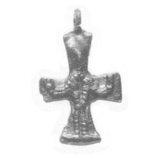

Catalog › CE-0034 · LOV1999-28
Cruce pectorală cu Hristos răstignit schematic
prima jumătate a sec. XI (1001–1050) · Földvárpuszta, lângă Arad, Arad, România · Muzeul Național Maghiar, Budapesta, inv. 1898.13.21
pectoral cross, bronz; prima jumătate a c. XI (1001–1050); found at Földvárpuszta, lângă Arad, Arad, România; kept at Muzeul Național Maghiar, Budapesta.


Identificare
- Categorie
- Cruce pectorală simplă
- Material
- Bronz
- Tehnică
- Turnare în relief
- Dimensiuni
- Î 41 × L 25 mm
Iconografie
- Descriere avers
- Hristos în relief primitiv, puternic tocit, cu brațele îndoite în sus; corpul și membrele redate prin incizii în formă de bețișoare.
- Revers
- Fără decor
- Descriere revers
- Neornamentată.
Datare și atribuire
- Datare
- prima jumătate a sec. XI (1001–1050)
- Centru
- Atelier local
Descoperire
- Localitate
- Földvárpuszta, lângă Arad
- Regiune
- Arad
- Țară
- România
- Context
- Tezaur
- Coordonate
- 46.1754° N, 21.3196° E
- Precizia locului
- Doar localitatea
Păstrare și referințe
- Colecție
- Muzeul Național Maghiar, Budapesta
- Nr. inventar
- 1898.13.21
- Bibliografie
- Zs. Lovag, Mittelalterliche Bronzegegenstände des Ungarischen Nationalmuseums (Catalogi Musei Nationalis Hungarici, Series Archaeologica III), Budapest, 1999, p. 28–29, cat. nr. 28, reprodusă la Abb. 28 (planșele, p. 135). Bibliografie citată în sursă: Réthy 1898, 130–131; Hampel 1905, II. 508; Bárány-Oberschall 1953, 236, Abb. 75.g; Szőke 1962, I. 62; Nepper 1993, 95, Tafel 5; Lovag 1980, 366, Abb. 1/3.
- Figura
- Abb. 28
- Planșe
- Lovag 1999, planșele, p. 135
- Observații
- Datare după Lovag: prima jumătate a sec. XI. XI. Găsită într-o groapă de pietriș, împreună cu alte obiecte din sec. XI și cu monede de la Béla I (1060–1063) și László I (1077–1095). Un exemplar întru totul asemănător provine dintr-un mormânt de copil din necropola Püspökladány-Eperjeshalom (sec. X–XI), cu cercei cu palmete. Cruce latină cu brațe care se lărgesc, ureche de agățare sus. Coordonate: ale localității (aproximative), nu date în sursă.
Citare: Corpus Encolpiorum, CE-0034, Cruce pectorală cu Hristos răstignit schematic, --root/piese/LOV1999-28/ (accesat 2026-10-20).